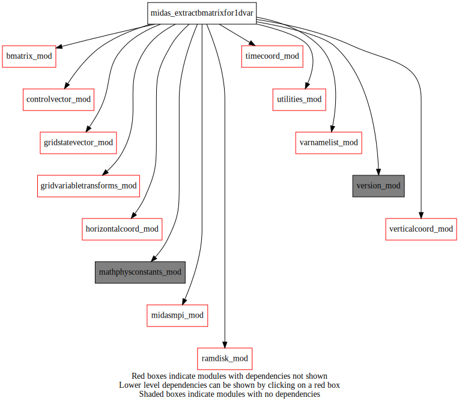

Dependency Diagrams:
 Direct Dependency Diagram¶
- program midas_extractbmatrixfor1dvar¶
- Purpose
Main program to extract B matrix to binary file Bmatrix.bin suitable for 1Dvar applications The B matrix is defined at a set of locations specified by the variable lonlatExtract and date extractDate
—
- Algorithm
The B matrix is computed column by column by application of operators bmat_sqrtBT and bmat_sqrtB
–
- File I/O
The required input files and produced output files are listed as follows.
Input and Output Files
Description of file
flnmlIn - Main namelist file with parameters user may modify
flnml_staticIn - The “static” namelist that should not be modified
bgcovIn - The B NMC matrix file
analysisgridIn - analysis grid
Bmatrix.binOut - The Bmatrix binary file for 1DVar
–
- Synopsis
Below is a summary of the
extractBmatrixFor1Dvarprogram calling sequence:
Initial setups:
Read parameters from the program namelist section NAMEXTRACT
Setup temporal grid
Get vertical and horizontal grid information from analysisgrid file
Allocate a gridStatevector object
Initialize the B matrix
Initialize the gridded variable transform module
Computation:
For each location specified in the namelist:
for each element of the stateVector
set this elemnt to one and the other to zero
apply bmat_sqrtBT
apply bmat_sqrtB
get the corresponding column of the B matrix
write the resulting B matrix to file
–
- Options
List of namelist blocks that can affect the
extractBmatrixFor1Dvarprogram.
The use of
extractBmatrixFor1Dvarprogram is controlled by the namelist block&namextractread by theextractBmatrixFor1Dvarprogram.
extractdatedate (YYYYMMDDHH format) for the B matrix extracted
lonlatExtract(longitudes, latitudes) pairs definining the locations where the B matrix is to be extracted
varNameExtractname of the variable to extract orallto extract everything in namstate
stepBinExtractshould be one offirst,middleorlastto define when in the assimilation window the B matrix is validNeeded modules
version_mod: MODULE version_mod (prefix=’ver’ category=’8. Low-level utilities and constants’)
midasmpi_mod: MODULE midasMpi_mod (prefix=’mmpi’ category=’8. Low-level utilities and constants’)
mathphysconstants_mod: MODULE MathPhysConstants_mod (prefix=’mpc’ category=’8. Low-level utilities and constants’)
controlvector_mod: MODULE controlVector_mod (prefix=’cvm’ category=’6. High-level data objects’)
gridvariabletransforms_mod: MODULE gridVariableTransforms (prefix=’gvt’ category=’4. Data Object transformations’)
varnamelist_mod: MODULE varNameList (prefix=’vnl’ category=’7. Low-level data objects’)
gridstatevector_mod: MODULE gridStateVector_mod (prefix=’gsv’ category=’6. High-level data objects’)
bmatrix_mod: MODULE BMatrix_mod (prefix=’bmat’ category=’2. B and R matrices’)
horizontalcoord_mod: MODULE HorizontalCoord_mod (prefix=’hco’ category=’7. Low-level data objects’)
verticalcoord_mod: MODULE verticalcoord (prefix=’vco’ category=’7. Low-level data objects’)
timecoord_mod: MODULE timeCoord (prefix=’tim’ category=’7. Low-level data objects’)
utilities_mod: MODULE utilities_mod (prefix=’utl’ category=’8. Low-level utilities and constants’)
ramdisk_mod: MODULE ramDisk_mod (prefix=’ram’ category=’8. Low-level utilities and constants’)Routines called
ver_printnameandversion(),mmpi_initialize(),utl_tmg_start(),utl_abort(),ram_setup(),tim_setup(),tim_getdatestamp(),tim_setdatestamp(),gsv_setup(),hco_setupfromfile(),vco_setupfromfile(),gsv_allocate(),gsv_zero(),bmat_setup(),gvt_setup(),gvt_setupreffromtrialfiles(),gsv_varexist(),gsv_getvarnamefromk(),gsv_getlevfromk(),vnl_varlevelfromvarname(),bmat_sqrtbt(),bmat_sqrtb(),gsv_deallocate(),utl_tmg_stop()
{kind=link}